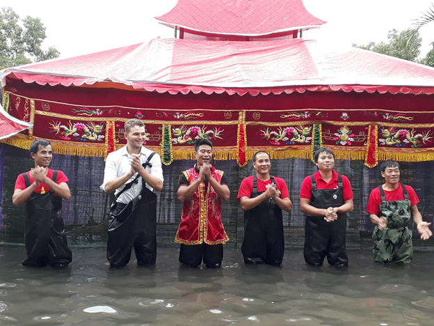

TIN TỨC-SỰ KIỆN nghệ thuật "Múa rối nước" tại trường Tiểu học Đình Bảng 2
Nhằm giữ gìn và bảo tồn truyền thống văn hóa dân tộc chiều ngày 23-10-2018, đoàn nghệ thuật múa rối nước Luy Lâu đã về biểu diễn tại sân trường Tiểu học Đình Bảng 2 với sự mong chờ, háo hức của hơn một nghìn học sinh. Các em đã vô cùng hứng khởi và yêu thích khi được xem biểu diễn và giao lưu với các nghệ sĩ để tìm hiểu về nghệ thuật múa rối nước.
Nhằm giữ gìn và bảo tồn truyền thống văn hóa dân tộc chiều ngày 23-10-2018, đoàn nghệ thuật múa rối nước Luy Lâu đã về biểu diễn tại sân trường Tiểu học Đình Bảng 2 với sự mong chờ, háo hức của hơn một nghìn học sinh. Các em đã vô cùng hứng khởi và yêu thích khi được xem biểu diễn và giao lưu với các nghệ sĩ để tìm hiểu về nghệ thuật múa rối nước.

Múa rối nước là một loại hình nghệ thuật sân khấu dân gian truyền thống độc đáo, ra đời từ nền văn hóa lúa nước. Từ một nghệ thuật mang yếu tố dân gian, múa rối nước đã trở thành một nghệ thuật truyền thống, một sáng tạo đặc biệt của người Việt. Múa rối nước cũng được coi là nét văn hóa phi vật thể đặc sắc của dân tộc Việt Nam. Do tính đặc sắc, nên từ nghệ thuật mang yếu tố dân gian, múa rối nước đã nhanh chóng trở thành nghệ thuật truyền thống, có thể sánh ngang với tuồng, chèo là những bộ môn nghệ thuật có vị trí cao trong nền sân khấu dân tộc. Múa rối có ở nhiều quốc gia trên thế giới, nhưng múa rối nước thì chỉ duy nhất có ở Việt Nam. Nhằm giữ gìn và bảo tồn truyền thống văn hóa dân tộc chiều ngày 23-10-2018, đoàn nghệ thuật múa rối nước Luy Lâu đã về biểu diễn tại sân trường Tiểu học Đình Bảng 2 với sự mong chờ, háo hức của hơn một nghìn học sinh. Các em đã vô cùng hứng khởi và yêu thích khi được xem biểu diễn và giao lưu với các nghệ sĩ để tìm hiểu về nghệ thuật múa rối nước.
